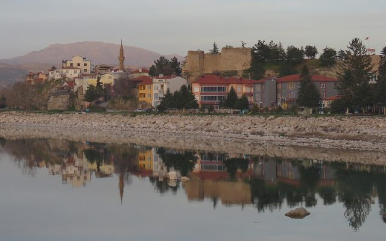
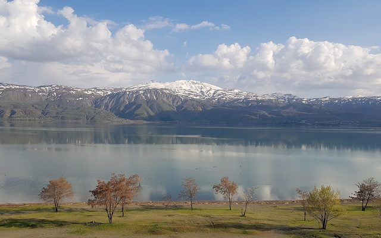
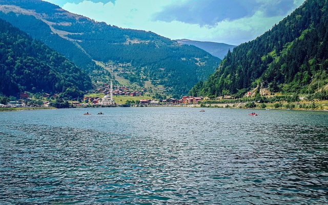

Waterfall


Canyon


Lake
 Floating Islands of BingölBingöl
Floating Islands of BingölBingöl Gölcük Crater Lake Nature ParkIsparta
Gölcük Crater Lake Nature ParkIsparta Karagöl (Borçka)Artvin
Karagöl (Borçka)Artvin Lake Abant Nature ParkBolu
Lake Abant Nature ParkBolu Lake Bafa Nature ParkMuğla
Lake Bafa Nature ParkMuğla Lake Beyşehir National ParkKonya
Lake Beyşehir National ParkKonya
Lake EğirdirIsparta
Lake HazarElâzığ Lake KöyceğizMuğla
Lake KöyceğizMuğla Lake MekeKonya
Lake MekeKonya Lake Nemrut KraterBitlis
Lake Nemrut KraterBitlis Lake SaldaBurdur
Lake SaldaBurdur Lake SapancaSakarya
Lake SapancaSakarya Lake TuzAksaray
Lake TuzAksaray Lake VanVan
Lake VanVan Lake ÇıldırArdahan
Lake ÇıldırArdahan
UzungölTrabzon Yedigöller National ParkBolu
Yedigöller National ParkBolu